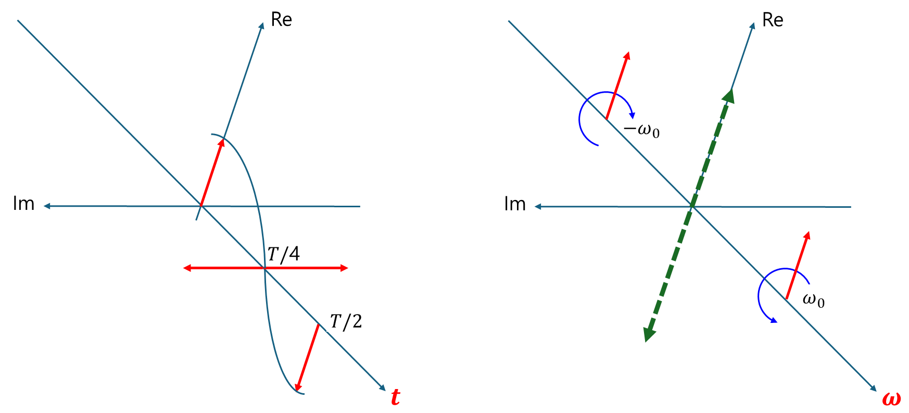
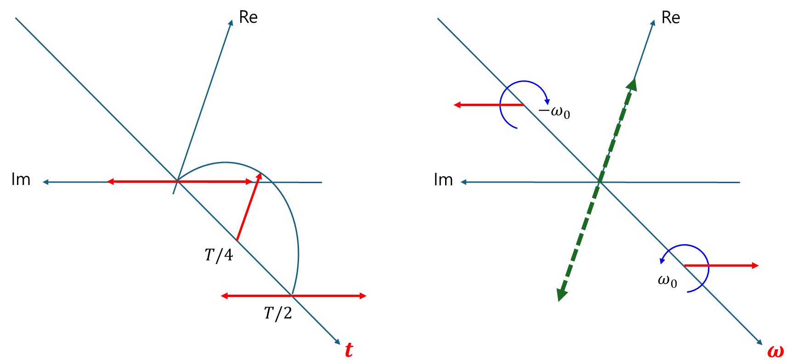

(b) Fourier transform I
1. 푸리에 변환의 본질
함수는 여러 주파수 성분들이 중첩 되어 있다고 볼 수 있다. 푸리에 변환은 각 주파수 성분의 크기를 구하는 것이다. 아래는 cosine과 sine 함수를 나타내며, 빨간색은 주파수 성분의 크기이다.
-
cosine 함수 
-
sine 함수 
2. 각 주파수 성분들은 orthogonal 하다.
$$ \langle e^{i\omega't}|e^{i\omega t} \rangle=2\pi\delta\left(\omega-\omega'\right) $$3. 표준 푸리에 변환, 정규 직교성(orthonormal) or 대칭성 기반의 정의
- 물리학, 특히 양자역학: 정규 직교성 기반 정의가 압도적으로 많이 사용된다. 에너지 보존과 확률 진폭 해석의 중요성 때문이다.
- 물리학적으로 사용될 때, 해석 공간의 변환보다는 주파수가 중첩되어 있다는 의미가 강함
4. 표준 푸리에 변환, 비대칭성 기반의 정의
- 수학: 비대칭성 기반 정의가 더 많이 사용되는 경향이 있다. 비대칭적인 형태가 수학적 이론 전개에 편리하기 때문
- 공학, 특히 신호 처리: 비대칭성 기반 정의가 더 많이 사용되는 경향이 있다.
- 수학, 공학적으로 사용될 때, 주파수 중첩 보다는 해석 공간의 변환 이라는 의미가 강함
5. 푸리에 변환의 확장: 분포 푸리에 변환
(1) 표준 푸리에 변환의 한계
$$ \int_{-\infty}^{\infty}dt |f\left(t\right)| <\infty $$위 식은 표준 푸리에 변환이 가능한 조건(절대 적분)이다. 표준 푸리에 변환의 한계를 극복하고 절대 적분 가능하지 않은 신호들을 포함한 더 넓은 범위의 신호에 대해 푸리에 변환을 정의하기 위해 분포(Distribution) 이론을 기반으로 푸리에 변환 개념을 확장한다.
(2) 분포 푸리에 변환 (Generalized Fourier Transform)
-
도입 이유: 표준 푸리에 변환으로는 다룰 수 없는 디랙 델타 함수($\delta(t)$), 단위 계단 함수($u(t)$), 상수 함수 등의 푸리에 변환을 정의하고, 푸리에 분석을 더 넓은 범위의 신호에 적용하기 위함이다.
-
정의 방식: 분포의 푸리에 변환은 직접적인 적분으로 정의되기보다는, 푸리에 변환의 성질(선형성, 미분, 이동 등)을 이용하거나 “시험 함수"와의 상호 작용을 통해 간접적으로 정의된다. 정칙화(Regularization) 는 이러한 분포의 푸리에 변환을 이해하고 도출하는 한 가지 유용한 기법으로, 이상적인 신호를 잘 동작하는 함수의 수열로 근사하고 그 수열의 표준 푸리에 변환의 극한을 취하는 방식이다.
-
결과 형태: 결과 또한 분포 형태가 될 수 있으며, 주파수 영역에서 델타 함수 $\delta(\omega)$와 같은 특이점을 포함할 수 있다.
(3) 주요 예시
-
디랙 델타 함수: $\mathcal{F}\lbrace\delta(t)\rbrace = 1$
-
단위 계단 함수: $\mathcal{F}\lbrace u(t)\rbrace = \pi\delta(\omega) + \frac{1}{i\omega}$
-
상수 함수 ($A$): $\mathcal{F}\lbrace A\rbrace = 2\pi A\delta(\omega)$
6. 라플라스 변환과의 관계
$$ \langle s|f\rangle|_{s=i\omega}=\langle \omega|f\rangle $$위 식을 만족하려면,
- ROC가 허수축을 포함하는 열린 영역인 경우: 표준 푸리에 변환 존재. (분포 푸리에 변환은 표준을 포함하는 더 큰 개념)
- ROC가 $\operatorname{Re}\lbrace s\rbrace=0$ 시: 분포 푸리에 변환 존재 (표준 푸리에 변환은 정의되지 않음)
- ROC가 $\operatorname{Re}\lbrace s\rbrace>0$ 또는 $\operatorname{Re}\lbrace s\rbrace<0$ 시: 분포 푸리에 변환 존재
- 단, ROC 공집합 시: 표준 & 분포 푸리에 변환이 존재 안 함
7. 페이저 변환과의 관계
페이저 변환과 수학적 뿌리는 동일하다. 그러나 전혀 다른 변환으로 생각하자. 페이저 변환은 주파수가 1개 (2개 이상 안됨) 일 때, 적용할 수 있는 방법이다.